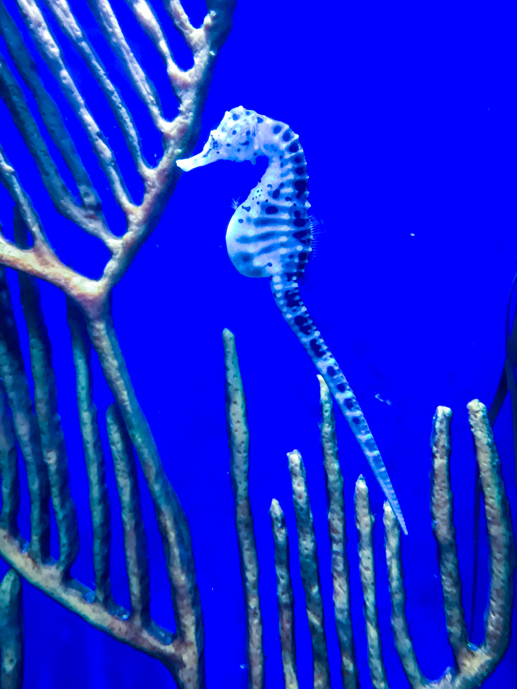

 Seahorses, scientifically called Hippocampus Genus; small but mighty, there are 40 known species found in tropical shallows throughout the world. They are not a staple of diets in the ocean due to the armor-like plates covering their body, although crabs love to eat them. Seahorses actually suck at swimming due to the shape of their body, and the fact that they only have one fin: they can die of exhaustion in rough seas if they don't anchor themselves in place with their tails to coral and sea grasses. These tiny wonders eat up to 3,000 brine shrimp in a day, they have no teeth and stomach meaning food goes through them so quickly that they have to eat all the time to stay alive! While there is no concrete evidence about a seahorses natural lifespan, it is estimated they live 1 to 5 years; species dependent.